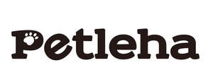

Trade Mark Journal No.2025/042 17 October 2025
UK00004275422 9 October 2025 (18,20,35)

- Class 18
- Dog leashes; Raincoats for pet dogs; Collars for pets; Dog shoes; Clothing for pets; Backpacks; Leather bags; Canvas bags; Animal leashes; Harness for animals; Dog bellybands; Pet clothing; Bags for carrying pets; All-purpose leather straps; Harness straps; Bags for carrying animals; Animal carriers [bags]; All-purpose carrying bags; Bags.
- Class 20
- Carrying boxes (Non-metallic -); Nesting boxes for animals; Animal carriers in the form of boxes; Dispensers for dog waste bags, fixed, not of metal; Dog kennels; Non-metal dog tags; Pet crates; Portable beds for pets; Identification tags, not of metal; Pet cushions; Inflatable pet beds; Cat beds; Dog beds; Pet furniture; Non-metal crates for animal transportation; Beds for household pets; Kennels for household pets; Nesting boxes for household pets; Pillows; Kennels; Furniture.
- Class 35
- Direct mail advertising; Advertising; Publicity; Television advertising; Shop window dressing; Presentation of goods on communication media, for retail purposes; On-line advertising on a computer network; Retail services in relation to pet products; On-line advertising on computer communication networks; Providing consumer information relating to goods and services; Bill-posting; Outdoor advertising; Layout services for advertising purposes; Advertising through all public communication means; Providing information concerning commercial sales; Direct mail advertising services; The bringing together, for the benefit of others, of a variety of telecommunications services, enabling consumers to conveniently compare and purchase those services; Dissemination of advertising material [leaflets, brochures and printed matter]; Promotional services; Business management for a trade company and for a service company.
Huizhou Meiluodi Sports Goods Co., Ltd
Representative: AXIS PROFESSIONALS LTD